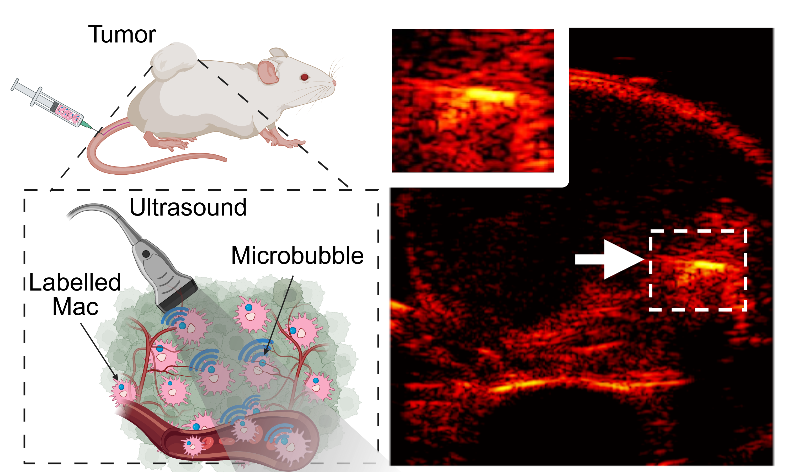

Our lab is developing a new method for imaging and tracking single cells within the body using ultrasound. We achieve this by labeling cells with lipid-shell microbubbles, which act as strong acoustic contrast agents.
We focus on macrophages due to their key role in diseases like cancer and atherosclerosis. These immune cells can phagocytose microbubbles and remain active, enabling real-time ultrasound tracking during immune activity.
We’ve validated our method using migration assays, flow cytometry, ELISA, and in vivo models. To enhance image quality, we refine acquisition sequences, algorithms, and registration pipelines—cross-confirmed with other imaging modalities.
